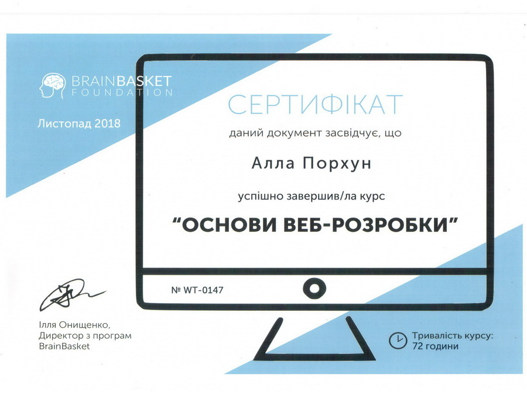

WOW Teachers – це всеукраїнський соціально-освітній проект з безкоштовного навчання вчителів інформатики web-розробки, що проводиться фондом BrainBasket за підтримки Міжнародного фонду "Відродження"
Стратегічна мета проекту – дати поштовх до розвитку шкільної ІТ-освіти “знизу”, зокрема підвищити рівень викладання інформатики у школах, допомогти вчителям та школярам подолати так званий “страх перед технологіями”, розвіяти міф про те, що ІТ це щось надзвичайно складне і тим самим стимулювати дітей обирати ІТ в якості майбутньої професії.
Тактична мета проекту – якісно підготувати вчителів інформатики викладати корисний, практичний та затребуваний матеріал школярам, а також мотивувати перепідготованих Фондом вчителів поділитися цими знаннями із максимальною кількістю школярів.
Навчальна програма була розроблена командою досвідчених менторів-ентузіастів Фонду та базується на найкращих профільних курсах провідних навчальних закладів світу та визнаних відкритих освітніх ресурсів, зокрема University of London, Microsoft, W3Schools, Mozilla MDN web docs та ін.
Перша група у Вінниці стартувала 29 серпня 2018 року. Ментор Перто Федченко провів 16 чудових занять у форматі змішаного навчання. Після чого було два тижні на написання фінальної роботи. Захист проектів відбувався 21 листопада. Результатом моєї підготовки став сайт, на якому Ви зараз знаходитися.
Гарним підсумком курсу стало урочисте вручення сертифікатів 12 грудня 2018 року.

Дякую ментору та фонду BrainBasket за витрачені сили та час, за знання, за терпіння та підтримку!
Довідка: Фонд BrainBasket є некомерційною організацією, мета якої – сприяти розвитку освіти українців в сфері ІТ. Фонд було засновано в 2014 році з візією об’єднання зусиль всіх гравців ІТ-індустрії для підготовки 100 000 програмістів до 2020 року.